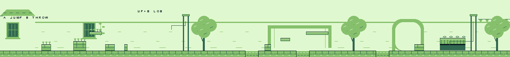

Independent review · 2 October 2026
A garden courtyard, with room for Kittie
The backdrop needs larger, better chosen forms. Identical steep roofs repeat every 64 pixels across the entire level. They read as miniature towers, and their windows sit directly behind Kittie. Adding more texture to these shapes would preserve the underlying problem.
Build one long, sunlit garden wall. Break it with a broad villa facade, planted terraces, a shaded service corner and an orchard entrance. Keep warm plaster and dusty terracotta in the distance; reserve strong dark edges for walkable surfaces, gates and objects. Kittie and the pink wool ball should remain the first things the eye finds.

Current 1280 × 144 source art. These are source shades; the running game applies the warm scene palettes.
Give the eight screens a progression
| World span | Art direction |
|---|
| 0–159 | A quiet arrival beside one broad villa edge and a planted stone box. Leave clear plaster behind the first ball pickup and jump. |
| 160–319 | Continue the wall with one shuttered window and sparse climbing leaves. Let the stepped planters carry the composition; avoid a roof over each obstacle. |
| 320–479 | Make the first bell court a clear enclosure. Place the bell and its connecting cord against plain plaster. Keep decoration away from the throwing arc and gate opening. |
| 480–639 | Open into the garden. One olive canopy can frame the first goon, but keep its trunk away from his patrol. Give the approaching channel distinct stone lips. |
| 640–799 | Use the raised route as the main silhouette. A recessed wall panel behind the lower route can separate the two heights without looking like another platform. |
| 800–959 | Repeat the garden materials with more open sky and less architecture. Let the ball, goon and final channel provide the detail. |
| 960–1119 | Transition into a service court with a broad arch or shuttered recess. Keep the closing entry shutter readable and the approach to the low table uncluttered. |
| 1120–1279 | Make the table and last bell the focal point, then frame the exit with the existing bunting and an olive bough. Preserve the visible ball passage beneath the table. |
Most of the words can go
Remove COLLECT WOOL
, HOLD UP TO LOB
, RING THE BELL
, WOOL VS GOONS
, THROW + RETRIEVE
, HIGH OR LOW?
, MIND THE GAP
, UNDER THE TABLE
, B UNDER A OVER
and GROVE
. They turn scenery into a worksheet, sometimes reveal the solution, and often scroll into view as sentence fragments.
Keep one concise controls lesson, A JUMP · B THROW
, and introduce UP+B LOB
at the first bell. Prefer a brief screen-fixed hint that disappears after the player performs the action. If that UI change is outside this pass, keep only these two short captions in quiet, deliberate spaces. Do not repeat the lob hint on the preceding screen.
Keep the hearts and ball inventory. The stage-clear message earns its place because it confirms progress and tells the player how to continue. A compact COURTYARD CLEAR / A CONTINUE
is enough; the next stage can identify itself on arrival. Keep the approved title and stage selector unchanged.
 The captions occupy the quietest part of the frame.
The captions occupy the quietest part of the frame.
 The table passage already communicates the puzzle.
The table passage already communicates the puzzle.
Spend tiles on shapes
Author a small reusable family of 8 × 8 wall, coping, shutter, roof and leaf tiles. Combine them into wider forms with unequal spacing. Use a single eave shadow and a few deliberate masonry joints, not scattered chips on every surface. Keep palette boundaries aligned to tiles and use the existing scene palette families where possible. Review full camera views at 160 × 144, including positions between these eight spans.
Preserve all collision coordinates, gate and bell positions, the table clearance, and the approved Kittie and cover assets. The decisive test is whether a player can distinguish a distant wall from something they can land on without reading a caption.
Basis: current full courtyard background, tools/make_level.py, level.json, scene palettes and retained native gameplay screenshots under courtyard/artifacts. This is an art and text review, not a new build or playtest.
Final pass, 2 October 2026: sampled first half
The revised first half is ready from an art and text perspective. The broad arrival roof, long garden wall and single olive landmark give the route a sense of place. Kittie, the pink wool ball and the first bell read clearly against the plaster. Dark coping separates the optional shelf and planters from the softer window frames and wall joints.
Reducing the captions to the controls and first-bell lob hint is a substantial improvement. The remaining words still clip at the camera edges during scrolling, but there is now little enough text that this is a minor polish issue. A screen-fixed hint remains preferable for a future UI pass; it does not need to hold up this revision.
I found no consequential presentation issue in these samples. This approval covers the arrival, optional shelf, first bell, first patrol and first channel through the approach to the raised route. It does not establish how the latter route, moved final shutter, empty final room or stage transition look in motion.
 Retained native captures, displayed at 2×. Also inspected individual 160 × 144 arrival, bell-approach and channel frames. The full updated source panorama was checked for composition; source inspection is not full-level runtime coverage.
Retained native captures, displayed at 2×. Also inspected individual 160 × 144 arrival, bell-approach and channel frames. The full updated source panorama was checked for composition; source inspection is not full-level runtime coverage.
Final verdict, 2 October 2026: whole route sampled
The revised courtyard is ready from an art and text perspective. I found no consequential presentation issue in the retained native views across the route. The architecture now changes purpose as the player moves: arrival windows, the first bell enclosure, the raised garden route, then the service arch and table. The repeated materials hold these places together without the former row of roofs.
At native size, the raised ball shelf has a clear top edge and enough separation from the broad wall recess behind it. The blue channels remain legible. The last arch provides a useful landmark before the shutter, and the final room gives the table, ball passage and bell enough room to explain their relationship. The raised gate and green check provide a clear success signal.
The short stage-clear message earns its space. Removing the puzzle captions leaves a more inviting scene and lets the player notice the table opening. I would keep the current amount of detail for this revision. There is no need to fill the quiet plaster with more texture or signs.
This verdict combines the first-half review with the latter-half contact sheet and individual 160 × 144 captures of the raised route, upper ball, final approach, shutter/table room, open gate and stage-clear message. It covers sampled presentation across all eight screen spans. It is not an independent gameplay test or a claim that every intervening animation frame was inspected. The brief cropping of the two tutorial hints remains a minor future UI improvement.
 Latter-half native evidence, displayed at 2×. Character and cover approval remain unchanged.
Latter-half native evidence, displayed at 2×. Character and cover approval remain unchanged.